Technical Whitepaper Series
Read in order for full context: architecture -> data model -> performance -> quality gates -> platform roadmap.
Part 5 closes the technical track. The previous chapters described architecture, data model, runtime behavior, and quality governance. This final chapter explains why the product stack is Rust + Tauri, where that choice is strong, and where it imposes cost that we accept deliberately.
Final chapter context
If you came directly to this chapter, start with Part 1 for boundaries and Part 2 for the findings model. This chapter assumes those decisions are already accepted and focuses on implementation tradeoffs.
1. Why Rust + Tauri for a local-first governance product
Rust is used for execution-critical paths because the scan engine combines concurrency, network I/O, normalization, and policy evaluation in one runtime. Strong type guarantees and explicit ownership rules reduce classes of runtime bugs that become expensive in long-lived governance tools.
Tauri is used for operator experience because it supports desktop-native workflows while keeping the core logic in Rust. For local-first products, this is a practical fit: operators can run and review scans in their own environment without introducing a heavyweight in-cloud control plane.

2. Strengths we rely on in production
- Execution predictability: Rust core supports controlled concurrency and deterministic policy paths.
- Credential custody alignment: local-first runtime avoids default central credential aggregation.
- Single-core logic path: CLI, desktop workflows, and local APIs share the same engine behavior.
- Operational portability: desktop and local API flows fit teams that cannot expose broad inbound services.
These strengths are practical, not theoretical. They directly support the review workflows described in earlier chapters.
3. Costs and tradeoffs we accept
No stack is free. The Rust + Tauri path introduces explicit costs:
- Cross-platform packaging overhead: desktop distribution and signing pipelines require disciplined release engineering.
- Specialized engineering investment: high-quality Rust contributions have a steeper onboarding curve than typical scripting stacks.
- UI-runtime boundary work: keeping desktop experience smooth while preserving strict core contracts requires deliberate API design.
- Provider maintenance burden: plugin contracts reduce chaos but do not eliminate ongoing API adaptation work.
We keep these costs because they buy deterministic behavior and stronger trust boundaries in enterprise usage.
4. Tauri-specific platform considerations
Tauri is effective for local-first delivery, but there are important operational details:
- startup sequencing must preserve runtime invariants (state registration before state-dependent calls);
- platform-specific logging paths must be stable so support workflows can retrieve startup evidence quickly;
- installer format and signing requirements differ by target OS and must be reflected in release gates.
These considerations are not edge cases. They shape day-to-day support quality.
5. Platform roadmap direction
Platform roadmap work is prioritized along three dimensions:

- Deterministic evidence quality: stronger lineage, clearer rule-version traceability, and cleaner handoff exports.
- Reliability governance: expanded fault-injection checks, tighter degraded-mode assertions, and better runtime diagnostics.
- Delivery safety: higher coverage in high-risk modules and stricter release evidence gates.
Roadmap language is intentionally conservative. We prefer explicit constraints over aggressive promises that cannot be validated.
6. What we are not building (on purpose)
- We are not pivoting to a default hosted credential-holding scanner model.
- We are not adding destructive one-click automation as default behavior without review context.
- We are not optimizing for vanity benchmark bursts at the expense of stable weekly completion.
These non-goals preserve alignment with the operating model described across the series.
7. Adoption checklist for technical buyers
- Validate trust-boundary expectations with security and infrastructure teams.
- Review policy model and evidence lineage requirements with operations and finance stakeholders.
- Run a restricted-scope baseline scan and verify degraded-mode and export behavior.
- Review release gate artifacts for the target version before broad rollout.
- Define ownership for provider plugin updates and threshold tuning cadence.
Teams that complete this checklist typically avoid the two biggest rollout risks: governance ambiguity and expectation mismatch.
Platform strategy appendix: decision criteria for the next two years
Technical buyers usually ask one strategic question after stack review: can this platform evolve without forcing a disruptive migration? The short answer is yes, if three criteria remain true: core contracts remain stable, operational evidence remains auditable, and platform improvements are additive rather than contradictory to local-first principles.
For stack evolution, we use explicit decision filters. A new capability should pass all filters before entering roadmap commitment:
- Does it preserve credential-custody guarantees?
- Does it strengthen deterministic evidence rather than adding opaque abstraction?
- Does it reduce operational friction for review workflows?
- Can it be validated through existing QA and release gate structure?
If any answer is no, the feature stays exploratory.
A second strategic consideration is plugin ecosystem growth. Provider expansion only helps when quality stays consistent. Rapid provider count growth without adapter quality discipline creates uneven confidence and support burden. We therefore prioritize adapter maturity signals: test depth, error taxonomy completeness, and evidence-lineage integrity. Coverage breadth follows, but not at the expense of reliability.
A third consideration is platform ergonomics for enterprise operators. As deployments grow, teams need clearer controls for scope selection, schedule governance, and report handoff. Improving these controls usually has higher user value than adding isolated niche detections. In roadmap planning, we weight operator workflow quality heavily because it drives sustained adoption.
A fourth consideration is release predictability. Enterprise teams value predictable behavior changes over frequent but noisy updates. This reinforces the strategy from Part 4: explicit gates, explicit release notes, and explicit rollback criteria. Predictability is not a marketing theme; it is a core adoption driver in regulated or risk-sensitive environments.
Finally, we maintain explicit non-goals to avoid roadmap drift. Not every technically possible feature is strategically right for this product. The platform remains focused on local-first governance with evidence-first operation. Features that weaken that identity may look attractive in short-term demos but create long-term architectural and trust debt.
Implementation FAQ: stack evolution without identity drift
Q: Could we switch to a pure hosted model later? Technically possible, but strategically misaligned with current trust boundary and operating model. Any such shift would require explicit product redefinition, not incremental roadmap wording.
Q: How do we justify Rust investment to business stakeholders? Connect it to outcomes: deterministic behavior, lower classes of runtime defects, and better long-term maintainability for multi-provider logic. Avoid language-level debates detached from operational impact.
Q: What makes Tauri the right fit here? It supports local-first operator workflows while reusing Rust core logic across desktop and API paths. The key value is contract consistency, not UI novelty.
Q: How do we keep roadmap credible? Prefer conservative commitments with explicit constraints. Overpromising in platform roadmap erodes buyer trust faster than delivering fewer but reliable milestones.
Q: What should buyers ask during technical due diligence? Ask for evidence lineage examples, degraded-mode handling examples, and release gate artifacts for recent versions. Those three artifacts reveal platform maturity quickly.
Field notes: platform roadmap governance in practice
Roadmap quality depends on disciplined scope language. We classify work as committed, in-progress, exploratory, or deferred. Only committed work should appear in customer expectation paths. This avoids accidental promise inflation. Another practical rule is to pair every major roadmap item with a retirement or simplification plan. Platforms get brittle when capability grows but legacy assumptions are never removed.
For architecture continuity, we evaluate roadmap proposals against the series principles: boundary clarity, deterministic evidence, reliable runtime behavior, and auditable delivery. If a proposal improves one area while weakening another, we force a design tradeoff review before implementation starts. This keeps the product coherent as it scales.
Finally, we treat trust as a measurable roadmap outcome. Features that improve explainability, reproducibility, and handoff clarity are prioritized because they reduce organizational drag and increase long-term adoption quality.
Data sources for this chapter
- Documentation Center and Security: local-first runtime and trust-boundary baseline.
- Release Ledger and Roadmap: platform evolution and quality-governance evidence.
- Repository release and QA scripts plus Windows stability constraints documented in project runbooks.
Series close
This technical whitepaper series is designed as one connected argument, not five isolated posts: boundaries (Part 1), model integrity (Part 2), runtime reliability (Part 3), delivery governance (Part 4), and platform tradeoffs (Part 5).
Use the five chapters together during architecture review and rollout planning. Reading one in isolation will miss key constraints that are intentionally distributed across the sequence.